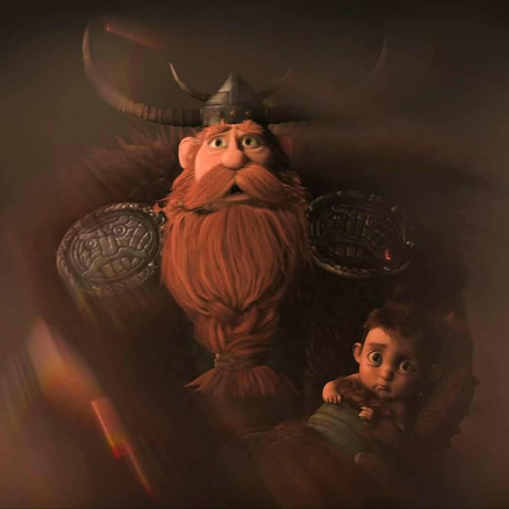
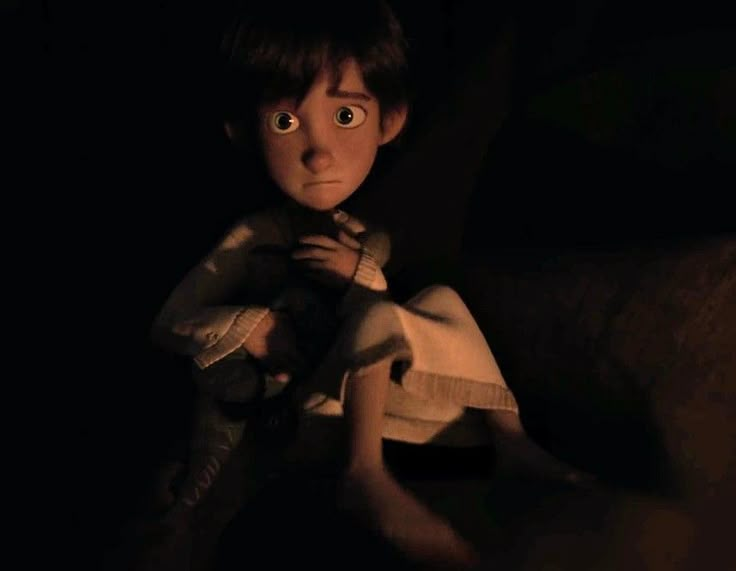
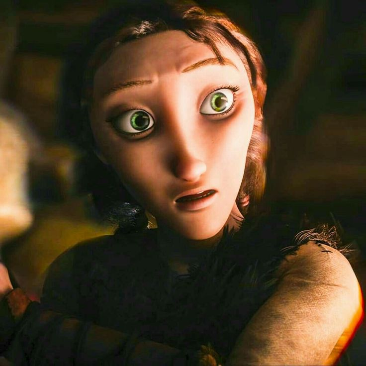
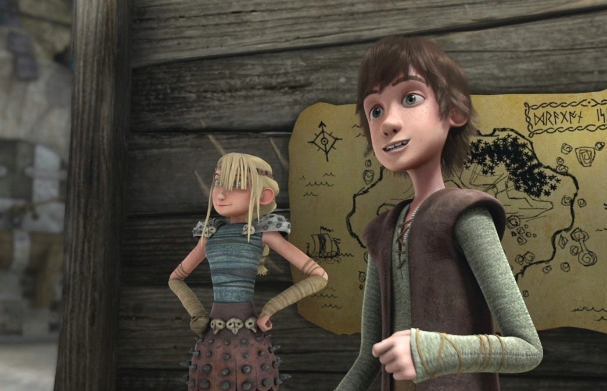
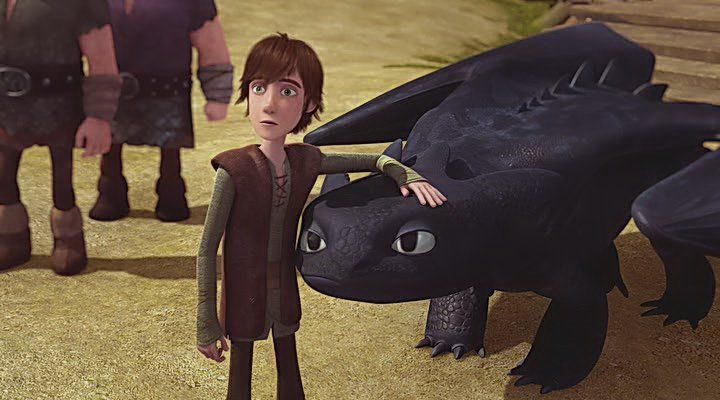

Иккинг Кровожадный Карасик 3
Краткие сведения:
- Полное имя: Иккинг Кровожадный Карасик III (в оригинале Hiccup Horrendous Haddock III).
- Сын вождя викингов Стоика (Stoick the Vast) и Валки (Valka).
- Прозвище «Кровожадный» — ироничное, так как в детстве он был худым, неуклюжим и совсем не похожим на свирепого викинга.
- Житель острова Олух (Berk).
Это был не большой, мускулистый мальчик с дубовой грудью и мужественным сердцем. Это был Иккинг... маленький, тощий, бледный мальчик, который в шесть лет не проявлял никаких признаков мышечной массы...
Отрочество:
- Отношения с отцом:
- Чувствовал постоянное давление и разочарование отца, который хотел видеть его традиционным сильным викингом.
- Страдал от эмоциональной отстранённости Стоика после предполагаемой гибели матери.
- Травма потери матери:
- Вырос с верой, что его мать, Валка, погибла от дракона, что усугубляло его чувство одиночества и непонимания в семье.
- Убежище в изобретательстве:
- Его личным пространством была кузница Плеваки, где он чертил схемы и создавал механизмы.
- Это было не просто хобби, а способ самореализации в мире, где его не принимали.
- Отношения с соплеменниками
- Был объектом насмешек и издевательств со стороны сверстников, особенно Сморкалы.
- Его единственным «другом» до появления Беззубика была Рыбьеног, но и эти отношения были скорее формальными.





Я пытался рассказать тебе это столько раз, но ты никогда не слушал. Ты меня никогда не слушаешь!
- Встреча с Беззубиком:
- Во время нападения на деревню, Икикнгу удается подбить Ночную Фурию.
- Найдя в лесу, воспринял его как шанс доказать свой статус, но, увидев в нём родственную душу, проявил эмпатию.
- Их тайные встречи в лесу стали самым важным и личным опытом его жизни.
- Раскрытие тайны:
- Иккингу удается одерживать первые победы на арене, что очень злит Астрид.
- Отношение со стороны соплеменников меняется.
- Проследив за Иккингом, Астрид раскрыла его тайну.
- Иккингу предстоит сразиться с драконном в финальном испытании.
- Во время схватки Беззубик встает за Иккинга, что выводит из себя Стоика.
- Стоик отрекается от Иккинга и отправляется на остров драконов.
- Признание:
- Иккинг собирается лететь на остров драконов, будущие наездники отправляются с ним.
- Викинги терпят поражение от Красной смерти.
- Иккинг спасает Беззубик, получает признание отца и побеждает Красную смерть, теряя ногу.
Переломный момент (15 лет)
Я не могу его убить. Он такой же беспомощный, как и я
Становление героя Олуха:
- Защитник Олуха:
- после победы над Красной смертью Иккинг становится самым уважаемым наездником на Олухе.
- Но чтобы доказать статус будущего вождя ему нужно пройти ещё множество испытаний.
- Покоритель драконов:
- В ходе борьбы с племенами изгоев и берсерков, Иккинг становится настоящим наставником для драконов.
- За время приключений, Икиинг вдвое расширил драконий учебник, найдя множество новых драконов.
- А также, Иккинг с Астрид становятся лучшими друзьями.
- Искатель приключений:
- После побега Дагура из тюрьмы на острове изгоев, скучающий по приключениям Иккинг с наездниками отправляется в погоню за предводителем Берсерков.
- В ходе погони, Дагур ушел с золотом охотников на драконов.
- Главный враг Иккинга:
- Потерпев несколько поражений, Дагур обЪединяется с охотниками за драконами и своей сестрой Хедер.
- Но не смотря на все попытки, охотники терпят поражения.
- В игру вступает предводитель охотников-Виго Гримборн.
- Виго быстро вычисляет шпиона, в лице Хедер, и хитростью одолевает наездников, забирая Драконий глаз.
- Король драконов:
- Икикнгу удается разгадать загадку драконьего глаза.
- Финальная битва прошла на острове берсерков, в которой сошлись все племена викингов с охотниками.
- Иккингу удалось одолеть Йохана, а Кроган был убит Драго.
Драконы и всадники Олуха



Ты возмужал и стал любимцем женщин.


Потому что я — никто без хорошего соревнования и не хочу быстро заканчивать игру. Иначе, где удовольствие?

Это драконий край...
Становление вождя:
- С Иккингом пытается поговорить отец с целью передать право вождя Олуха.
- Иккинг не хочет слушать Стоика и улетает.
- Астрид пытается переубедить Иккинга.

Все эти пламенные речи не моё.
- После очередной ссоры со Стоиком, Иккинг встречает таинственного наездника, которым оказывается его мать.
- Стоик следует за Иккингом и находит святилище Валки.
- Семья воссоединилась, но счастье продлилось недолго.

Ты также прекрасна, как в день, когда исчезла.
- Во время боя, Беззубик, находившийся под контролем Альфы, убивает Стоика.
- Викинги хоронят вождя и отправляются за Драго на Олух.
- Иккингу и Беззубику удается одолеть Драго. Иккинг стал новым вождем, а беззубик Альфой.
Вождь защитит свой народ...
- Пррошел год после победы над Драго, как на Олух нападает Гриммель с драконьей армией.
- Иккинг не видет другого выхода, как покинуть Олух.
- Иккинг побеждает Гримеля, отпуская всех драконов в Скрытый мир.

Лети братец, лети...
- Иккинг женился на Астрид.
- Олух живет и процветает.
- Спустя десять лет, Иккинг вновь встречает Беззубика.

Секрет в том, что драконы не ушли навсегда. Они просто... стали жить скрытно. Ждут того момента, когда человечество будет готово. Когда мы научимся жить с ними в мире… Может быть, однажды… это случится.